BetterSISSearch is a fast, visual SIS enrollment simulator. Search courses, build a timetable, check time conflicts, then copy the 4-digit class numbers into SIS. No login. Nothing is written to SIS.
Search by course code like MAT 3004, a title, or an instructor.
Filter by subject, level, weekday, time range, and instructor.
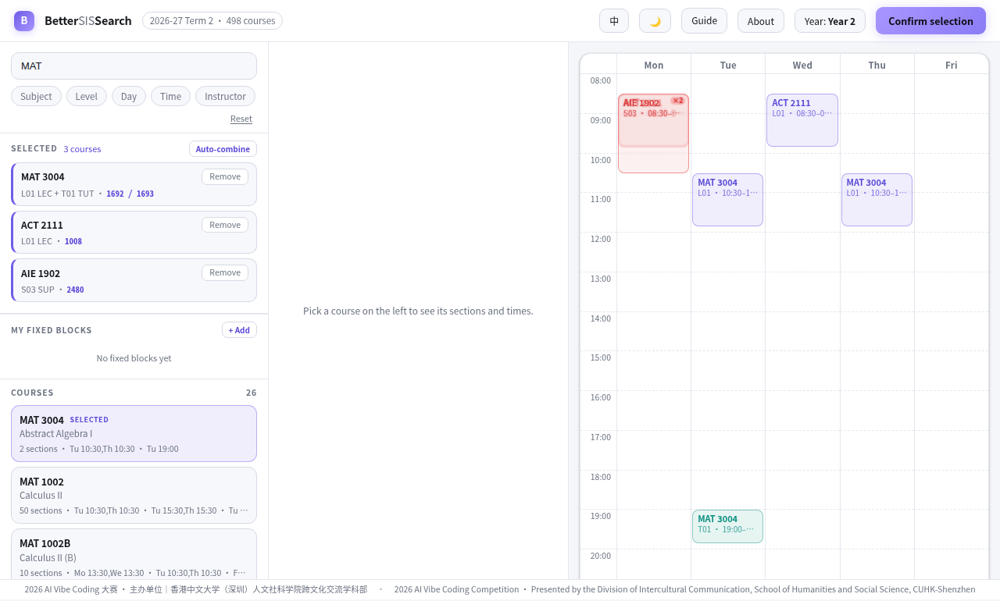
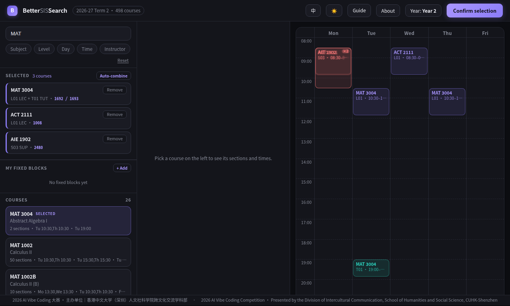
Click a course to open its sections in the middle panel.
Solid blocks are the sections already in your timetable. Dashed blocks are other sections you can choose.
Overlapping sections turn red. They are not blocked.
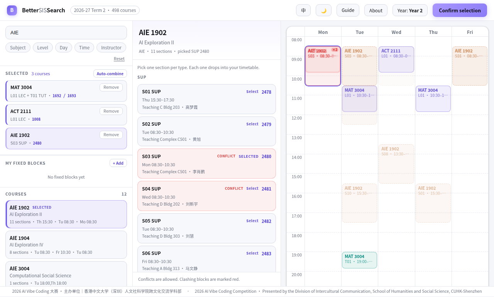
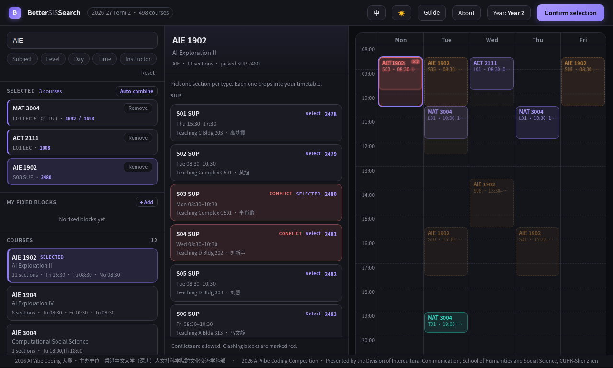
Click Confirm selection. Copy the 4-digit numbers.
In SIS, open Enrollment, then Enrollment Shopping Cart. Type each number in Enter Class Nbr.
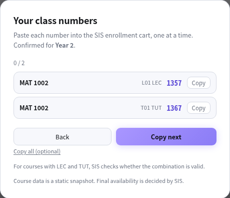
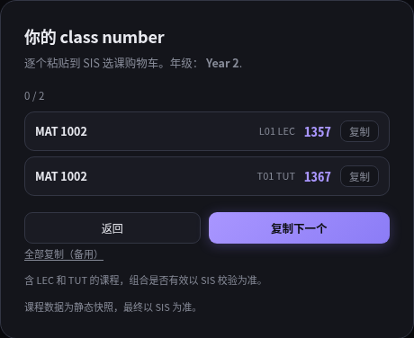
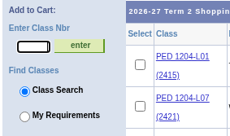
No clash-free way to fit everything? Click Auto-combine. It tries the sections of the selected courses and returns a working set; turn on “no morning” to exclude classes before 09:00. The result lands on the timetable and can be undone.
Add standing commitments (football training, a part-time job) under My fixed blocks. They take up time on the timetable and are counted in conflicts and Auto-combine.
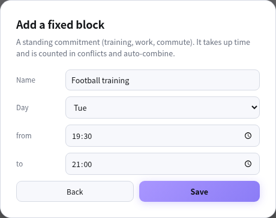
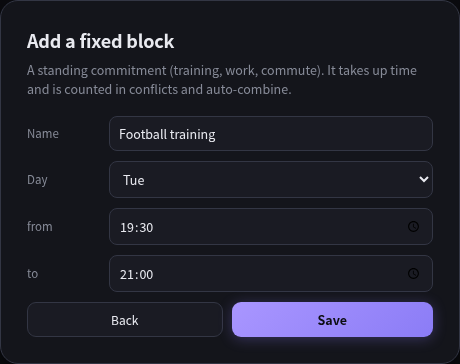
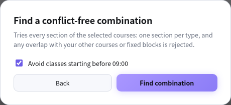
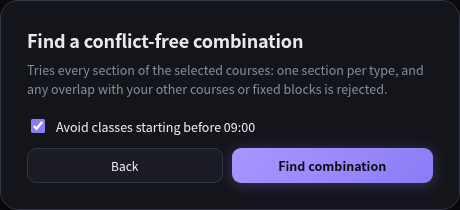
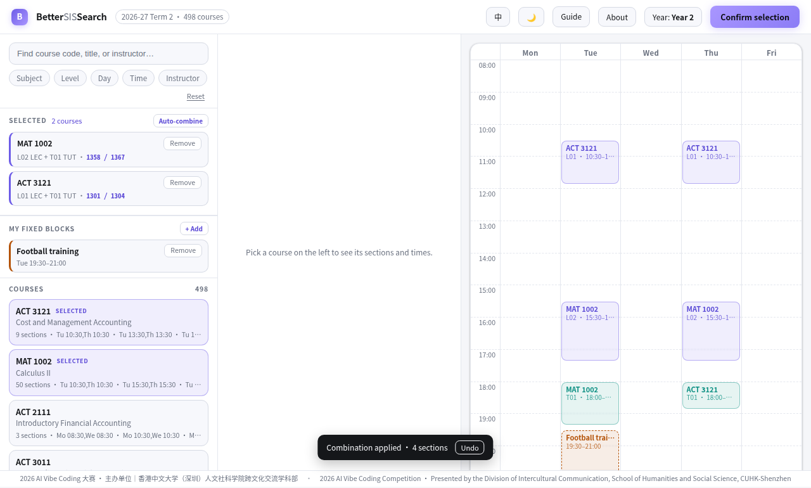
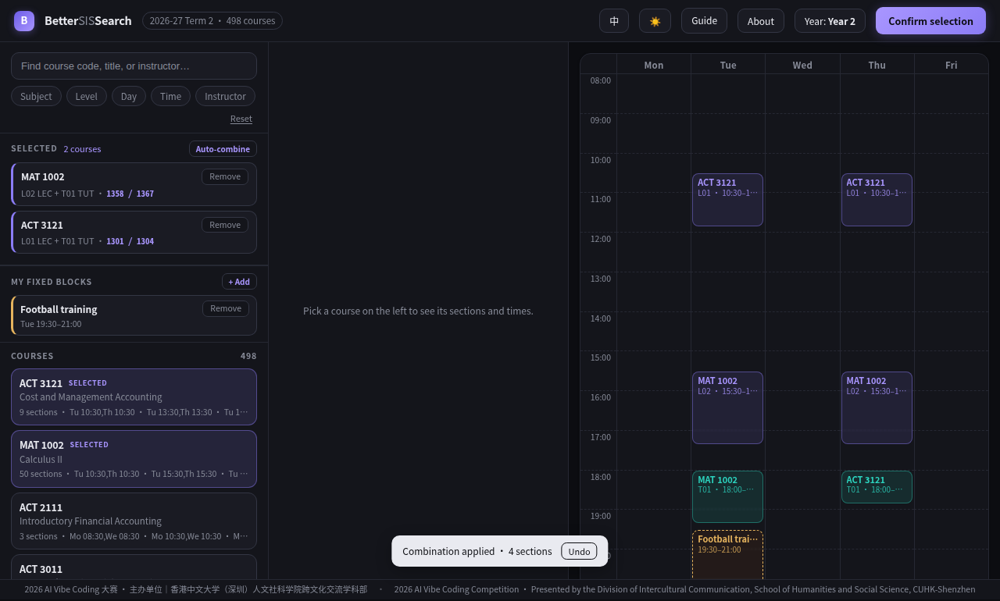
Common questions